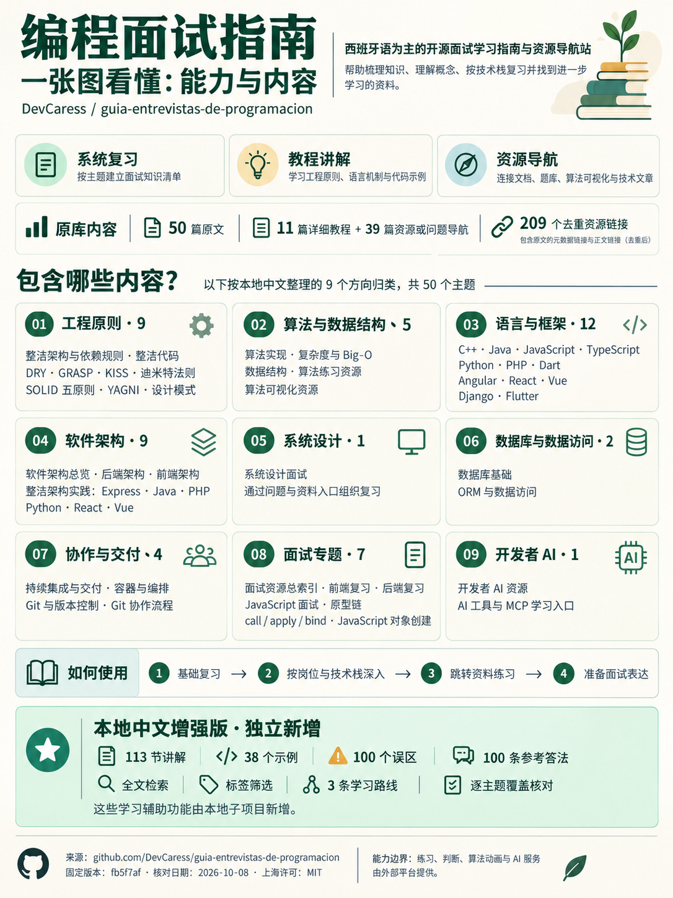

编程面试指南：能力、内容与原理
原库以西班牙语为主，用 Astro、MDX 和 Tailwind 出版面试学习指南与资源导航。固定版本包含50篇原文：11篇详细教程、39篇资源或问题导航，原文引用共209个去重地址。

本项目独立生成的总览图 · 1086 × 1448 px。下载原图 PNG九个中文方向
工程原则、算法与数据结构、语言与框架、软件架构、系统设计、数据库与数据访问、协作与交付、面试专题、开发者 AI。九类为本地中文重组。
原理与学习价值
原库在构建期读取 MDX 内容集合，生成章节、导航和引用的静态页面。本地增强版保存固定原文快照，用独立数据模块提供中文讲解、搜索、路线和覆盖核对，帮助建立复习范围、验证概念并组织面试表达。
本地补充113节讲解、38个示例、100个误区和100条参考答法。完整外链文章、题库判题、算法动画与 AI 服务由外部平台提供；进度收藏、细分自测与双语更新为后续研究方向。
交互搜索和主题阅读需要 JavaScript。可以先查看完整图，或阅读固定原仓库指南。